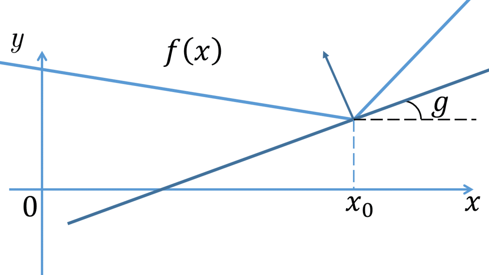
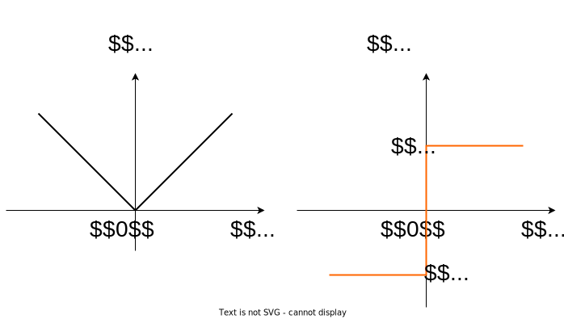
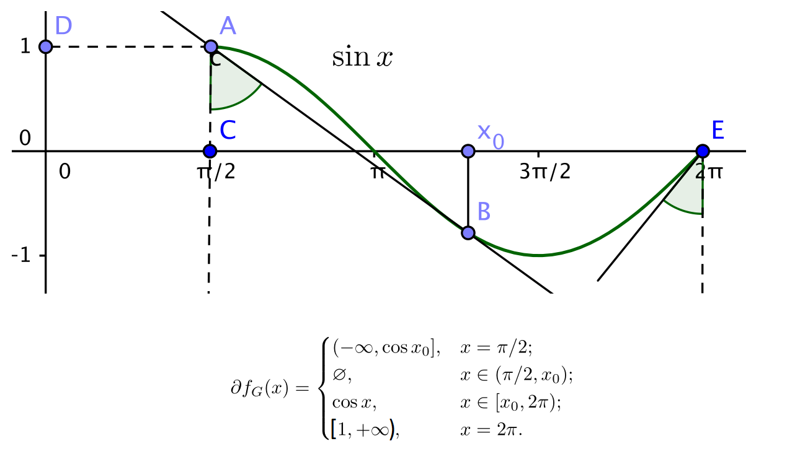

Subgradient and subdifferential
Motivation
Важным свойством непрерывной выпуклой функции f(x) является то, что в выбранной точке x_0 для всех x \in \text{dom } f выполнено неравенство:
f(x) \geq f(x_0) + \langle g, x - x_0 \rangle
для некоторого вектора g, то есть касательная к графику функции является глобальной оценкой снизу для функции.

- Если f(x) - дифференцируема, то g = \nabla f(x_0)
- Не все непрерывные выпуклые функции дифференцируемы :)
Не хочется лишаться такого вкусного свойства.
Subgradient
Вектор g называется субградиентом функции f(x): S \to \mathbb{R} в точке x_0, если \forall x \in S:
f(x) \geq f(x_0) + \langle g, x - x_0 \rangle
Subdifferential
Множество всех субградиентов функции f(x) в точке x_0 называется субдифференциалом f в x_0 и обозначается \partial f(x_0). * Если x_0 \in \mathbf{ri } S, то \partial f(x_0) выпуклое компактное множество. * Выпуклая функция f(x) дифференцируема в точке x_0\Rightarrow \partial f(x_0) = \{\nabla f(x_0)\} * Если \partial f(x_0) \neq \emptyset \;\;\; \forall x_0 \in S, то f(x) - выпукла на S.

Moreau - Rockafellar theorem (subdifferential of a linear combination)
Пусть f_i(x) - выпуклые функции на выпуклых множествах S_i, \; i = \overline{1,n}.
Тогда, если \bigcap\limits_{i=1}^n \mathbf{ri } S_i \neq \emptyset то функция f(x) = \sum\limits_{i=1}^n a_i f_i(x), \; a_i > 0 имеет субдифференциал \partial_S f(x) на множестве S = \bigcap\limits_{i=1}^n S_i и
\partial_S f(x) = \sum\limits_{i=1}^n a_i \partial_{S_i} f_i(x)
Dubovitsky - Milutin theorem (subdifferential of a point-wise maximum)
Пусть f_i(x) - выпуклые функции на открытом выпуклом множестве S \subseteq \mathbb{R}^n, \; x_0 \in S, а поточечный максимум определяется как f(x) = \underset{i}{\operatorname{max}} f_i(x). Тогда:
\partial_S f(x_0) = \mathbf{conv}\left\{ \bigcup\limits_{i \in I(x_0)} \partial_S f_i(x_0) \right\},
где I(x) = \{ i \in [1:m]: f_i(x) = f(x)\}
Chain rule for subdifferentials
Пусть g_1, \ldots, g_m - выпуклые функции на открытом выпуклом множестве S \subseteq \mathbb{R}^n, g = (g_1, \ldots, g_m) - образованная из них вектор - функция, \varphi - монотонно неубывающая выпуклая функция на открытом выпуклом множестве U \subseteq \mathbb{R}^m, причем g(S) \subseteq U. Тогда субдифференциал функции f(x) = \varphi \left( g(x)\right) имеет вид:
\partial f(x) = \bigcup\limits_{p \in \partial \varphi(u)} \left( \sum\limits_{i=1}^{m}p_i \partial g_i(x) \right),
где u = g(x)
В частности, если функция \varphi дифференцируема в точке u = g(x), то формула запишется так:
\partial f(x) = \sum\limits_{i=1}^{m}\dfrac{\partial \varphi}{\partial u_i}(u) \partial g_i(x)
Subdifferential calculus
- \partial (\alpha f)(x) = \alpha \partial f(x), for \alpha \geq 0
- \partial (\sum f_i)(x) = \sum \partial f_i (x), f_i - выпуклые функции
- \partial (f(Ax + b))(x) = A^T\partial f(Ax + b) , f - выпуклая функция
- z \in \partial f(x) if and only if x \in \partial f^∗(z).
Examples
Концептуально, различают три способа решения задач на поиск субградиента: * Теоремы Моро - Рокафеллара, композиции, максимума * Геометрически * По определению
1
Найти \partial f(x), если f(x) = |x|
Решение:
Решить задачу можно либо геометрически (в каждой точке числовой прямой указать угловые коэффициенты прямых, глобально подпирающих функцию снизу), либо по теореме Моро - Рокафеллара, рассмотрев f(x) как композицию выпуклых функций:
f(x) = \max\{-x, x\}

2
Найти \partial f(x), если f(x) = |x - 1| + |x + 1|
Решение:
Совершенно аналогично применяем теорему Моро - Рокафеллара, учитывая следующее:
\partial f_1(x) = \begin{cases} -1, &x < 1\\ [-1;1], \;\;\;\;\; &x = 1 \\ 1, &x > 1 \end{cases} \qquad \partial f_2(x) = \begin{cases} -1, &x < -1\\ [-1;1], &x = -1 \\ 1, &x > -1 \end{cases}
Таким образом:
\partial f(x) = \begin{cases} -2, &x < -1\\ [-2;0], &x = -1 \\ 0, &-1 < x < 1 \\ [0;2], &x = 1 \\ 2, &x > 1 \\ \end{cases}
3
Найти \partial f(x), если f(x) = \left[ \max(0, f_0(x))\right]^q. Здесь f_0(x) - выпуклая функция на открытом выпуклом множестве S, q \geq 1.
Решение:
Согласно теореме о композиции (функция \varphi (x) = x^q - дифференцируема), а g(x) = \max(0, f_0(x)) имеем: \partial f(x) = q(g(x))^{q-1} \partial g(x)
По теореме о поточечном максимуме:
\partial g(x) = \begin{cases} \partial f_0(x), \quad f_0(x) > 0,\\ \{0\}, \quad f_0(x) < 0 \\ \{a \mid a = \lambda a', \; 0 \le \lambda \le 1, \; a' \in \partial f_0(x)\}, \;\; f_0(x) = 0 \end{cases}
4
Найти \partial f(x), если f(x) = \sin x, x \in [\pi/2; 2\pi]

5
Найти \partial f(x), если f(x) = |c_1^\top x| + |c_2^\top x|
Решение: Пусть f_1(x) = |c_1^\top x| , а f_2(x) = |c_2^\top x| . Так как эти функции выпуклы, субдифференциал их суммы равен сумме субдифференциалов. Найдем каждый из них:
\partial f_1(x) = \partial \left( \max \{c_1^\top x, -c_1^\top x\} \right) = \begin{cases} -c_1, &c_1^\top x < 0\\ \mathbf{conv}(-c_1;c_1), &c_1^\top x = 0 \\ c_1, &c_1^\top x > 0 \end{cases} \partial f_2(x) = \partial \left( \max \{c_2^\top x, -c_2^\top x\} \right) = \begin{cases} -c_2, &c_2^\top x < 0\\ \mathbf{conv}(-c_2;c_2), &c_2^\top x = 0 \\ c_2, &c_2^\top x > 0 \end{cases}
Далее интересными представляются лишь различные взаимные расположения векторов c_1 и c_2, рассмотрение которых предлагается читателю.
6
Найти \partial f(x), если f(x) = \| x\|_1
Решение: По определению
\|x\|_1 = |x_1| + |x_2| + \ldots + |x_n| = s_1 x_1 + s_2 x_2 + \ldots + s_n x_n
Рассмотрим эту сумму как поточечный максимум линейных функций по x: g(x) = s^\top x, где s_i = \{ -1, 1\}. Каждая такая функция однозначно определяется набором коэффициентов \{s_i\}_{i=1}^n.
Тогда по теореме Дубовицкого - Милютина, в каждой точке \partial f = \mathbf{conv}\left(\bigcup\limits_{i \in I(x)} \partial g_i(x)\right)
Заметим, что \partial g(x) = \partial \left( \max \{s^\top x, -s^\top x\} \right) = \begin{cases} -s, &s^\top x < 0\\ \mathbf{conv}(-s;s), &s^\top x = 0 \\ s, &s^\top x > 0 \end{cases}.
Причем, правило выбора “активной” функции поточечного максимума в каждой точке следующее: * Если j-ая координата точки отрицательна, s_i^j = -1 * Если j-ая координата точки положительна, s_i^j = 1 * Если j-ая координата точки равна нулю, то подходят оба варианта коэффициентов и соответствующих им функций, а значит, необходимо включать субградиенты этих функций в объединение в теореме Дубовицкого - Милютина.
В итоге получаем ответ:
\partial f(x) = \left\{ g \; : \; \|g\|_\infty \leq 1, \quad g^\top x = \|x\|_1 \right\}